Acute mesenteric ischaemia: the debrief for week 11, Ten out of ten
Wednesday 09:30 · majors, cubicle 4
Ten out of ten, a soft abdomen, and a triage note that says “tummy bug”.

- Pauline Whitworth, 76. The pain began at 06:40, while she was making tea.
- The ambulance crew wrote “abdomen soft, mildly tender”. Triage wrote “?gastroenteritis”.
- Breathing 22 a minute, oxygen saturation 96% on air, blood pressure 156/88, pulse 130 and irregular, temperature 37.1 °C, alert. NEWS2 (National Early Warning Score 2): 4.
- At 09:30, her bowel could still be saved.
- The question for this page: what was in front of you at 09:30 that said this was not a tummy bug?
09:30 · your hand on her abdomen
She is writhing, and her abdomen is soft. Reassuring, or alarming?
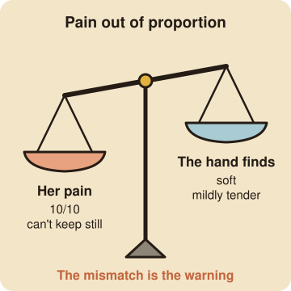
- Alarming. Severe pain out of proportion to what you find on examination should be assumed to be this condition until proven otherwise.
- The mismatch is the sign: severe pain, with little to find.
- Karen said it without knowing why it mattered: “She had me at home without so much as an aspirin.”
- Card 8 shows why the abdomen stays soft.
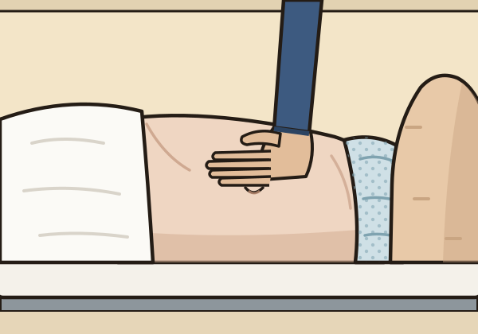
As you would explain it to Karen
The gut’s main artery is blocked, and the bowel it feeds starts to die.
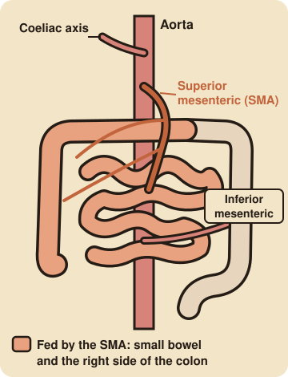
- Three arteries leave the front of the body’s main artery (the aorta) to feed the gut.
- The middle one, the superior mesenteric artery (SMA), supplies the small bowel and the right side of the large bowel (colon).
- Block it, and that bowel is starved of blood: acute mesenteric ischaemia. Left long enough, the bowel dies (infarction).
- In a study across 32 hospitals worldwide, about one in two patients died in hospital.
Two years of AF
A clot from a fibrillating heart travels down the gut’s artery and sticks a few centimetres in.
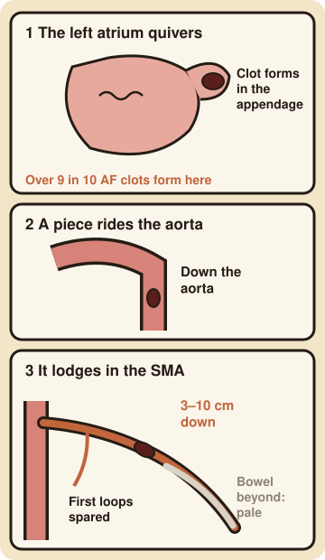
1In the heart
In atrial fibrillation (AF) the top chamber on the left (the left atrium) quivers instead of squeezing. Blood slows in its small pouch (the left atrial appendage), where more than nine in ten AF clots form.
2The journey
Clots that reach the gut can come from the left atrium in AF. A piece breaks off and is carried down the aorta.
3Where it sticks
Most lodge 3 to 10 cm down the SMA, sparing the first loops of small bowel (jejunum). More than one in five patients have clots in other arteries at the same time, including those to the spleen and kidneys. Pauline’s lodged beyond the first branches.
The next patient may be different
There are four ways to starve the gut, and each has its own kind of patient.
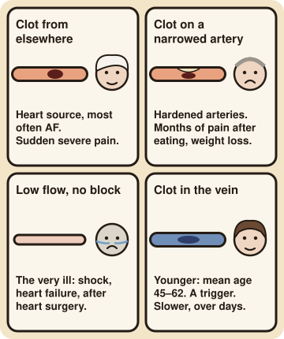
Tap each one.
- A clot on a narrowed artery often follows months of pain after meals and weight loss. Pauline had none, and she had AF off anticoagulation.
The carrier bag of boxes
The drug list said apixaban. She had stopped it five weeks earlier, and told nobody.
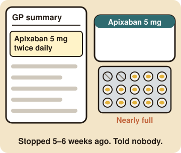
- The GP list on the ambulance sheet: apixaban 5 mg twice a day.
- She had stopped it about five to six weeks earlier, and told nobody.
- Why: a nosebleed at the hairdresser’s that lasted over an hour, bruises up her arms, and a friend at church who said the tablets thin your blood like water.
- Nobody in the department knew that morning. Karen thought she took them. The box in the carrier bag, nearly full, was only found afterwards.
- The apixaban level sent on Wednesday morning came back that afternoon: undetectable.
- A list is not what a patient takes. Check what they actually take, with the patient and family, when they come in (medicines reconciliation, NICE NG5). When whether someone is anticoagulated changes what you do, send the level (EHRA 2021).
What stopping cost
Her stroke-risk score was 4 before Wednesday. Now it is 6.
CHA₂DS₂-VASc estimates the risk of stroke in AF.
- Heart failure (C)1
- High blood pressure (H)1
- Age 75 or over (A₂)2
- Diabetes (D)1
- Previous stroke, mini-stroke (TIA) or clot elsewhere (S₂)2
- Vascular disease (V)1
- Age 65 to 74 (A)1
- Female (Sc)1
Pauline: tap to count
- Before Wednesday: age 2, female 1, high blood pressure 1. Total 4.
- This clot counts as a clot elsewhere and adds 2. Total 6.
- NICE offers an anticoagulant tablet (a DOAC, direct oral anticoagulant) at a score of 2 or more, and says not to withhold one for age or falls alone.
Why the abdomen stayed soft
The lining dies first and the outer wall last. That is why the pain comes hours before the signs.
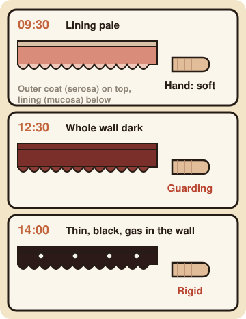
09:30The lining starves
The damage starts in the lining (mucosa) and works out towards the outer coat (serosa). So there is severe pain at first with little to find. Hers: soft, mildly tender.
12:30The lining is lost
Within about six hours of a complete loss of blood supply, the lining is damaged beyond repair. In the case, rebound tenderness and guarding had appeared by now.
14:00The whole wall
Guarding and rigidity (peritonitis) mean the bowel is probably already dead. Hers was swollen and hard.
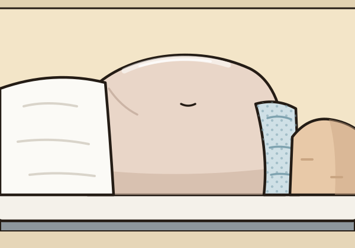
12:30 · she has gone quiet
The pain can ease before she gets worse.
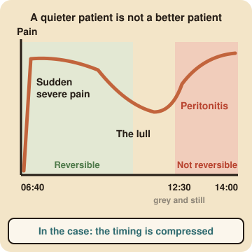
- Three phases: sudden severe pain, still reversible; then a lull, when the pain may lessen; then peritonitis, which is not reversible.
- A quieter patient is not a better patient.
- The dying lining lets gut bacteria into the blood (translocation). That is one reason for antibiotics (card 19).
- A high lactate and acid in the blood mark general deterioration.
- In the casePauline was grey and still by 12:30. The case compresses the timing.
06:40 to 08:40
Three things together: pain out of proportion, the gut emptying, and a source of clot.
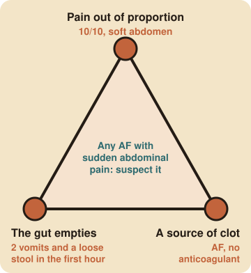
- The triad: severe pain with little to find, the gut emptying (vomiting, diarrhoea), and a source of clot, most often AF.
- Pauline: 10/10 pain with a soft abdomen; two vomits and an urgent loose stool within the first hour, and a third vomit in the ambulance; AF off anticoagulation.
- Any patient with AF and sudden abdominal pain should be suspected of having it.
- Her rectal examination showed a faint pink tinge.
How often each sign is present
| Sign | Patients |
|---|---|
| Tenderness all over | 54–90% |
| Nausea or vomiting | 39–93% |
| Swollen abdomen | 18–54% |
| Signs of peritonitis | 13–65% |
| Diarrhoea or blood from the back passage | 12–48% |
What it gets mistaken for
Three look-alikes. Each explains part of her, and none explains all of her.
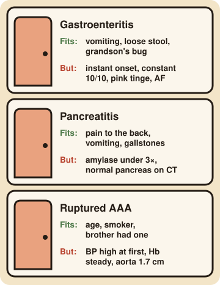
Fits: vomiting, a loose stool, her grandson’s sickness bug.
Does not: instant onset, constant 10/10 pain, a pink tinge, AF off anticoagulation. Vomiting and diarrhoea are part of the triad too.
Fits: pain through to the back, vomiting, gallstones, a raised amylase.
The next card decides it.
Fits: her age, 40 years of smoking, a brother with one.
Does not: high blood pressure at first, a steady haemoglobin, no mass, and an aorta of 1.7 cm. An aneurysm starts at 3 cm. Women are not invited for NHS aneurysm screening; men are invited in the year they turn 65.
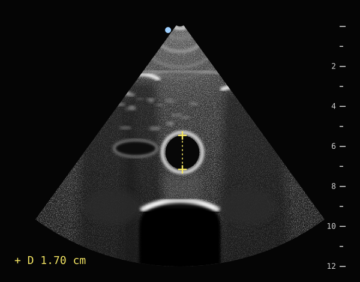
The bloods are back
Amylase 240, and the pain goes through to her back. Pancreatitis?
- Not enough. Pancreatitis needs two of three: typical pain, amylase or lipase at least three times the upper limit, or typical imaging.
- Hers was 240 against an upper limit of 100, and it peaked at 294.
- Amylase is raised in about half of patients with this condition.
- It can even pass three times the limit when the bowel dies: in one series, 5 of 63 did. The threshold is a rule, not a guarantee.
- Her CT showed a normal pancreas.
The first gas
A lactate of 2.6 and a NEWS2 of 4 cannot clear her.
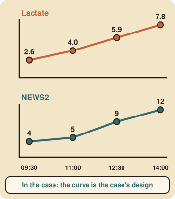
- No single blood test confirms or rules out this condition: not the lactate, not the D-dimer.
- In two reports, the lactate was normal early in the course in about half of patients.
- A raised lactate marks general deterioration, not the bowel itself.
- In the caseHer lactate went 2.6, 4.0, 5.9, then 7.8 by 14:00, while her NEWS2 went 4, 5, 9, then 12.
The request form
One scan settles it: a CT angiogram, arterial phase, asked for by name, with the question on the form.
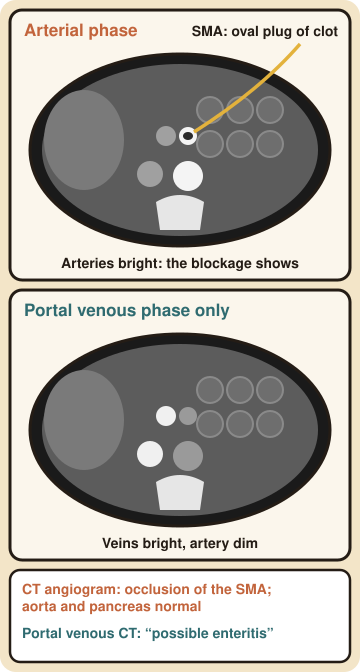
The artery is bright with contrast. A clot shows as an oval plug with contrast all round it.
In the caseThe report: the artery blocked a few centimetres from its origin; the aorta and the pancreas normal.
The veins are bright. The arteries are not assessed.
In the caseThe report: “possible enteritis”.
- The first test: CT with an arterial phase and a portal venous phase, in thin (1 mm) slices.
- The arterial phase shows the blockage. The venous phase shows the bowel wall.
- A routine CT abdomen is often done in the portal venous phase alone.
- If the request does not state the suspicion, the condition is “highly likely to be underdiagnosed”, in the words of the European vascular guideline.
“Kidneys a bit tired”
Creatinine 118, eGFR 39, “kidneys a bit tired”. Wait for the kidney result, or scan now?
- Her baseline eGFR (estimated glomerular filtration rate) was 46.
- Scan now. Emergency contrast CT is the test whatever the kidney function.
- NICE: do not delay iodine-based contrast in an emergency when the delay is the bigger risk.
- The small extra risk to the kidneys is at an eGFR below 30.
- A raised creatinine with vomiting and diarrhoea is often temporary.
- A CT without contrast shows neither the vessels nor the bowel wall.
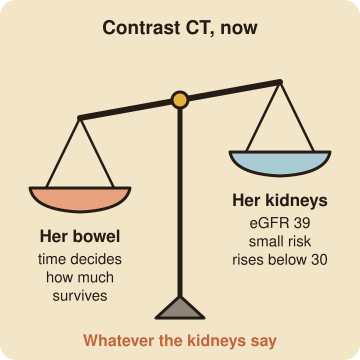
The rest of the tray
The other tests narrow it down but cannot close it.
Tap a test for what it showed in Pauline.
- A raised white count or lactate may raise the suspicion, but neither decides it.
06:40 onwards
Every hour the bowel loses ground: saved, resected, or too late.
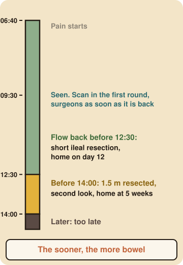
- How much bowel survives is the thing that most decides the outcome, and time decides that.
- Within about six hours of a complete loss of blood supply, the lining is damaged beyond repair.
- In older surgical series, patients with symptoms for less than six hours had living bowel at operation. Beyond six hours, dead bowel became more common.
- The case’s three endings are its own judgement, not thresholds. The sooner, the more bowel.
- In the caseThe fastest route: the scan in the first round, and the surgeons as soon as it was back.
Before 12:30Bowel saved
Flow restored through a catheter about five hours after the pain began. The surgeons took out a short length of ileum that evening. Home on day 12, on anticoagulation for life.
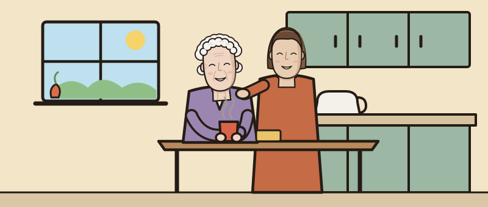
12:30 to 14:00Bowel resected
By the time flow returned she had peritonitis. About a metre and a half of small bowel was removed, her abdomen was left open, and the surgeons came back the next day for a second look. Six days in intensive care; home after five weeks.
After 14:00, or neverToo late
Too much of her bowel was dead to live on. The surgeons and Karen agreed that she should be kept comfortable. She died early the next morning, with her daughter beside her.
All at once
Suspect it, scan it, call the surgeons, and treat while you wait, all at once.
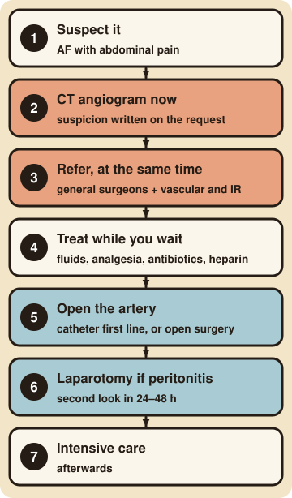
1Suspect it
AF and sudden abdominal pain.
2Scan it
CT angiogram now, with the suspicion written on the request.
3Call both teams
Refer early to the general surgeons and to vascular surgery with interventional radiology (IR), at the same time. Patients first sent to the surgical emergency room reached CT and theatre sooner, and 50% rather than 75% had died at 90 days.
4Treat while you wait
Fluids, morphine, antibiotics, heparin (card 19).
5Open the artery
Through a catheter, which is considered first, or by open surgery when the abdomen has to be opened anyway. For clots from the heart, no trial has compared the two.
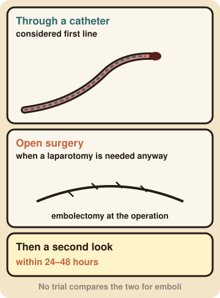
6Laparotomy if needed
Operate if there is peritonitis. Open the artery before removing bowel, remove only bowel that is clearly dead, leave the joins for later, and come back for a second look within 24 to 48 hours.
7Intensive care
Afterwards, in intensive care.
While the scanner warms up
Fluids, morphine, antibiotics, and heparin when the team says so.
Unfractionated heparin (UFH), directed by the specialists, before the procedure, by trust protocol. It is easy to manage and can be switched off before theatre.
Treatment-dose low-molecular-weight heparin (LMWH) is “a good alternative if no surgical interventions are planned”. That is not Pauline.
The European vascular guideline makes no recommendation on heparin here.
- Also: nil by mouth, a nasogastric tube, a urinary catheter and a repeat gas.
The rate on the monitor
The fast AF is the response, not the problem. Leave it alone.
- Her rate is driven by pain, a shortage of fluid and, later, sepsis.
- Rate control is not first line when AF has a reversible cause.
- No electrical cardioversion (DCCV). After more than 48 hours off anticoagulation, it waits until she has had at least three weeks of anticoagulation.
- Emergency cardioversion is only for life-threatening instability caused by new AF. Hers is neither new nor the cause.
- Digoxin may worsen blood flow to the gut.
- In the caseFluid and morphine brought her rate down.
The drug chart, again
Six more things that feel right and are wrong.
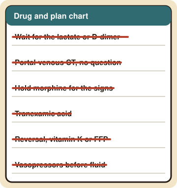
Tap each line to strike it out.
- And a normal clotting screen proves nothing about apixaban, either way.
The kitchen table
After a clot to the gut, anticoagulation is usually for life, so talk about the nosebleed.
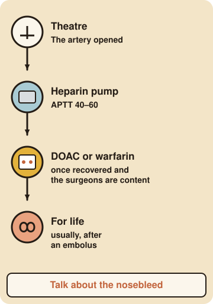
- Heparin after surgery, adjusted to an APTT of 40 to 60.
- Then an anticoagulant tablet (a DOAC or warfarin) once she has recovered and the surgeons are content. No source gives a day.
- After a clot from the heart, lifelong anticoagulation is usually needed.
- At a score of 6, NICE offers a DOAC, does not withhold it for age, and bases any decision to stop on reassessed risk and a conversation.
- The nosebleed that made her stop is the conversation to have.
- In one small long-term study, survivors mostly died later of other heart and artery disease.
- After a long resection, short bowel becomes the problem. The outlook is poor if the colon and the end of the ileum are lost and less than 100 cm of small bowel remains.
09:30, one last time
Three explanations fitted part of her. Only one fitted all of her.
| Finding | Tummy bug | Pancreatitis | Ruptured AAA | The truth |
|---|---|---|---|---|
| Sudden onset | ✗ | ✗ | ✓ | ✓ |
| 10/10, soft abdomen | ✗ | ✓ | ||
| Vomiting, loose stool | ✓ | ✓ | ✓ | |
| Pink tinge | ✗ | ✓ | ||
| AF off apixaban | ✗ | ✓ | ||
| Amylase 240 | ◐ | ✓ | ||
| Lactate rising | ✗ | ✓ | ||
| Aorta 1.7 cm, Hb steady | ✗ | ✓ | ||
| CT angiogram | ✗ | ✗ | ✗ | ✓ |
✓ fits · ✗ against · ◐ partly · blank: neither way. Tap a finding to go to its card.
- The soft abdomen was the warning.
- The drug list was not what she took.
- The scan, asked for properly, settled it.
Take home
Five things to carry into the department.
- Pain out of proportion to a soft abdomen is the alarm.
- AF plus sudden abdominal pain: ask whether they actually take their anticoagulant.
- A normal lactate clears nobody.
- CT angiogram, arterial phase, now, whatever the kidneys say.
- Call the surgeons and vascular at the same time, and treat while you wait.
Where this comes from.
The condition
- Koelemay MJ, et al. European Society for Vascular Surgery (ESVS) 2025 clinical practice guidelines on the management of diseases of the mesenteric and renal arteries and veins. Eur J Vasc Endovasc Surg 2025;70(2):153–218. doi:10.1016/j.ejvs.2025.06.010
- Bala M, et al. Acute mesenteric ischemia: updated guidelines of the World Society of Emergency Surgery. World J Emerg Surg 2022;17:54. doi:10.1186/s13017-022-00443-x
- Björck M, et al. Management of the diseases of mesenteric arteries and veins: clinical practice guidelines of the ESVS. Eur J Vasc Endovasc Surg 2017;53:460–510. doi:10.1016/j.ejvs.2017.01.010
- Klar E, et al. Acute mesenteric ischemia: a vascular emergency. Dtsch Arztebl Int 2012;109:249–256. doi:10.3238/arztebl.2012.0249
- Watada S, et al. Prediction of need for bowel resection in acute superior mesenteric artery occlusion. Ann Gastroenterol Surg 2023;7:175–181. doi:10.1002/ags3.12614
- Sanders K. The superior mesenteric artery. TeachMeAnatomy (updated November 2025). teachmeanatomy.info
The look-alikes and the scan
- Banks PA, et al. Classification of acute pancreatitis 2012: revision of the Atlanta classification. Gut 2013;62:102–111. doi:10.1136/gutjnl-2012-302779
- Wilson C, Imrie CW. Amylase and gut infarction. Br J Surg 1986;73:219–221. doi:10.1002/bjs.1800730322
- NICE. Acute kidney injury: prevention, detection and management (NG148), recommendations 1.1.6–1.1.7. nice.org.uk/guidance/ng148
- UK Health Security Agency. Abdominal aortic aneurysm screening: programme overview. gov.uk; NHS. AAA screening results. nhs.uk
AF and anticoagulation
- NICE. Atrial fibrillation: diagnosis and management (NG196). nice.org.uk/guidance/ng196
- NICE. Medicines optimisation (NG5), section 1.3. nice.org.uk/guidance/ng5
- Steffel J, et al. 2021 European Heart Rhythm Association practical guide on the use of non-vitamin K antagonist oral anticoagulants in patients with atrial fibrillation. Europace 2021;23:1612–1676. doi:10.1093/europace/euab065
- University Hospitals of North Midlands pathology. Apixaban level. uhnm.nhs.uk
- Qureshi A, Lip GYH, et al. Imaging and biophysical modelling of thrombogenic mechanisms in atrial fibrillation and stroke. Front Cardiovasc Med 2023;9:1074562. doi:10.3389/fcvm.2022.1074562
- MDCalc. CHA₂DS₂-VASc score for atrial fibrillation stroke risk. mdcalc.com
Treatment
- NICE. Intravenous fluid therapy in adults in hospital (CG174), recommendation 1.3.1. nice.org.uk/guidance/cg174
- Manterola C, et al. Analgesia in patients with acute abdominal pain. Cochrane Database Syst Rev 2011;(1):CD005660. doi:10.1002/14651858.CD005660.pub3
- British National Formulary. Tranexamic acid: contra-indications. bnf.nice.org.uk
Every statement on this page is checked against these sources in the project’s fact-check file. Guidelines change. Checked November 2026.